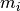
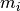

Introduction¶
The Cole-Cole decomposition tools provide a set of Python programs to fit electrical complex resistivity spectra (or Spectral Induced Polarisation, SIP, spectra) using a Cole-Cole decomposition scheme (see section Theory of SIP models for an theoretical overview of the implemented methods). This also includes the popular Debye decomposition scheme. In addition to the independent decomposition of one or more spectra, a smoothing regularization can be applied between multiple spectra for cases of time-lapse data where only smooth changes between subsequent spectra are expected.
The installation for Windows and Linux is described in the section Installation, and the section Getting Started provides first usage instructions.
Please note that the Cole-Cole decomposition is, at the moment, only implemented for the resistivity case. For the conductivity formulation, only the Debye decompositon (c = 1) is implemented.
If you are looking for a classic Cole-Cole fit using only one or two terms, have a look at https://github.com/m-weigand/Cole-Cole-fit.
Two primary decomposition programs are provided:
- dd_single.py fits an arbitrary number of SIP spectra without any kind of regularization between the spectra.
- dd_time.py fits an arbitrary number of time-lapse SIP spectra with a
regularization on the time axis (separate regularization parameters for
 and the chargeabilities )
and the chargeabilities )
See Fit Routines for a complete list of the provided programs, and detailed description of the input parameters.
Each front-end is accompanied by a post processing tool (ddps.py, ddpt.py) which allows various analysis and postprocessing steps to be applied on inversion results. This includes filtering and plotting routines.
Within this documentation, the term “Cole-Cole decomposition tools” referes to the ready-to-use distribution of the decomposition tools. This distribution is composed of two python subprojects: geccoinv and dd_interfaces. geccoinv contains the multi-dimensional inversion framework used for the decomposition process, while dd_interfaces includes the forward formulation of the Decomposition process, and the frontends used to apply the implemented methods. For end-users, it is always recommended to use the “debye decomposition tools”, if in doubt.
Feedback, bug reports, and general advice is always welcome. Please use the issue tracker on the github pages for communication (https://github.com/m-weigand/ccd_tools/). Before you report a bug, make sure to search the existing bugs (issues) for a relevant item. Also make sure to include all necessary information to reproduce the bug. A small example, including data set and batch file to trigger the bug, are always helpful!
Separate repositories are maintained for geccoing and ccd_tools (only relevant if you plan on changing the code):
The Debye decomposition tools (including the components “DD_Interfaces” and “geccoinv”) are licenced under the GPL 3 or later (https://www.gnu.org/licenses/licenses.html#GPL).
Note
If you are reading this manual as a PDF file, please note that download links do not work. Please refer to the corresponding HTML version for these links.